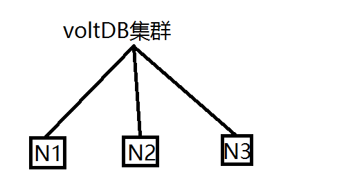

（三）VoltDB 的实际使用
Posted on 2017-01-20(星期五) 19:00 in VoltDB
一、初始化
在完成安装后就可以尝试启动 VoltDB。在启动之前需要先选择一个目录来初始化voltDB根目录，比如单独建立一个 VoltDB 项目的目录。初始化只需一次，但是如果有修改配置或者有重新初始化的必要也可以强制重新初始化。初始化完成后在该目录下便可启动 VoltDB。
$voltdb init
$voltdb start
另外初始化时可以指定初始化目录及VoltDB配置文件，使用 --D 参数及 --config 参数。
$voltdb init --D= --config=
二、集群部署
集群下部署安装 VoltDB 与单节点部署安装流程一致，只需安装 VoltDB 到不同的节点。与单节点相同，集群下启动 VoltDB 之前需要为每台节点初始化 VoltDB 根目录。另外，同一个集群下的所有节点的配置文件要保持完全一致，所以在初始化根目录时，需要指定相同的配置文件。
$voltdb init -D ~/voltdb --config=depolyment.xml
其中：
- -D： 代表VoltDB初始化的根目录（可以指定，也可以不加此参数，默认代表在当前目录下初始化
- --config：指定了目录下的VoltDB的配置文件，在集群启动的时候需要指定这个参数。
初始化后启动集群中的VoltDB数据库需要确认以下信息：
- 使用
--count来指定组成集群的节点数 - 使用
--host
或者 -H 选项来指定集群中的节点，如以下示例：
$voltdb start --count=5 --host=voltnode1,voltnode2,voltnode3,voltnode4,voltnode5
指定集群节点，这时候 host 参数已经指定了具体的节点，所以集群节点数也就默认设置为5，也不需要再去指定 count 参数。
$voltdb start --host=node2,node3,node4
三、集群动态增加节点以及恢复节点
这种高可用方案必须基于企业版。如果出现集群节点不足以应对现有数据量，导致整个集群的计算能力不够高，可以动态增加节点来达到横向扩展，并且这过程中集群不需停机可以保证正常的工作量。而对于恢复节点，当出现适量范围内的节点宕机，集群可以保持正常工作，并且已宕机的节点在经过修复后仍然可以恢复到集群中工作，这种高可用方案很大的提高了集群容量的弹性和集群的安全性。决定集群高可用的参数与 VoltDB 的配置参数 k-safty 有关，详细设置细节同样将会在以下章节中讲述。
示例:向集群中动态增加节点，在新节点已经初始化后的根目录下执行以下命令
$voltdb start --add --host=server1,server2
注意：使用 --add 选项时其后面的 --host 选项的服务器个数必须大于 k-safty 设置值。
还有另外一种集群动态增加节点的方式，也是用于节点恢复。如下图，3个节点的集群，如果出现N1节点的宕机，那么他恢复集群的方式可以让它在重新启动时指向N2的地址，就可以做到节点的添加以及恢复。
$voltdb start --host=N2

四、最大堆（Java HEAP）设置
VoltDB 的底层一部分使用 java ，另外一部分使用的 C 以及 C++ ，从而 VoltDB 需要保证足够堆的大小来完成其部分功能。默认情况下 VoltDB 的最大堆设置大小为 2GB，但是在实际中如果使用了大量的存储过程以及 View 这些需要耗去大量堆空间的操作，默认值终究是不够使用的，所以在启动前可以分配给堆合适的空间来保证其正常工作。
$ export VOLTDB_HEAPMAX="3072"
上述命令是将最大堆大小更改为3GB。
五、配置（deployment.xml）
VoltDB 的配置文件非常关键，关系到整个集群的效率以及最佳使用。所以需要对配置文件做详细的解析。关于配置文件主要会通过两项参数 k-safty 以及 sitesperhost 来讲述。
5.1 k-safty 介绍以及设置
VoltDB 的高可用集群方案是通过 k-safty 来完成。当然，这种方案同样只支持于企业版。在 VoltDB 当中，没有主从节点之分，它是一种 shard-nothing 结构，也就是说集群中所有的节点都是同一个级别。分区时都是平均分配数据，并且所有的节点读写速度全部一致，其实这也是 VoltDB 处理速度快的一方面原因。k-safty 的设置可以保证在集群启动之后在集群下的每个节点都会保存一个数据副本以保证任何节点宕机后的容灾，而不至于使集群数据丢失或者集群丧失计算能力。
<?xml version="1.0"?>
<deployment>
<cluster . . .
k-factor=”1” />
</deployment>
5.2 sitesperhost 介绍以及设置
sitesperhost 参数合理设置是关系到整个集群的计算能力，也关系到整个集群当中 partition 的个数，sitesperhost 的值乘以集群节点数就是集群的分区数。在 VoltDB 当中 sitesperhost 的值设定最多不可以超过24，最佳实践通常在4到16。但是其值的设定需要不断的集群测试来设定，通常其值的设置是通过3/4倍的逻辑cpu个数来设定；现有4c,2c*2三个节点组成的集群，那么这个集群的 sitesperhost 的值范围会在3~4之间设置，但是设置3为最佳，那么此时集群的总的分区数为9。另外 VoltDB 的每个分区都是由集群当中的每个cpu绑定管理，在查询时， VoltDB 根据分区来执行查询(分区键设计以及分区HASH决定)，从而 VoltDB 对于单机以及集群cpu要求较高。
<?xml version="1.0"?>
<deployment>
<cluster . . .
sitesperhost="3"
/>
</deployment>
以上是关于VoltDB使用上的介绍以及实践经验，不足处也请多多指教。以下会继续更新VoltDB相关的介绍使用文档。
六、参考文档
- https://docs.voltdb.com/UsingVoltDB/ConfigStructure.php